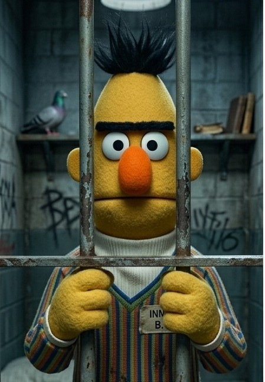

🐑 Diseños Experimentales · ANOVA Bifactorial
Efecto del Suplemento Nutricional
y la Raza sobre el APD en Corderos
Diseño Completamente Aleatorio con dos factores — Aumento de Peso Diario (g/día) analizado mediante ANOVA factorial 2×2 con 4 réplicas por celda
16
Observaciones
2×2
Diseño factorial
4
Réplicas/celda
2956
Total general
4
Tratamientos

🎓'" />Joaquín Alejandro
Reynoso Quilca

Andre'e Alessandro
Chili Lima